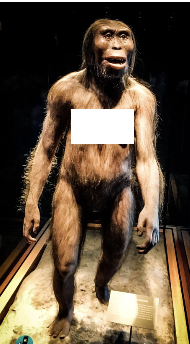

the first humans had no tools. they used only sticks and unshaped rocks. we didnt cooperate well and were easily eaten by predators like lions. but then, 2.5 MILLION years ago, everything changed.
a human species called Homo Hablis started to shape rocks by smashing them together and they had a bigger brain than earlier humans. now humans had something to protect themselves.
1.5 million years ago, we invented a very crucial thing, FIRE! we could now have warmth and light, we learned to make torches. now we could scare predators away and set fire to forests.
200,000 years ago, our human species, Homo Sapien, had evolved. but... 70,000 years ago we made stories, religon, and started to form big groups, we were still nomadic though, because we didnt invent farming yet.
.png)
homo sapiens started to battle other human species to death. or they mated untill other went extinct. it depends on which source u trust. but anyway. the other human species were wiped off the earth.

50,000 years ago sapiens reached where no human has before. Australia.

15,000 years ago sapiens crossed then shallow waters between Siberia and Alaska, landing in america. TAKE THAT COLUMBUS!!!
we started farming around 12,000 years ago. it originated in mesopotamia.
also in mesopotamia something was invented that would change the world forever. they invented a writing called cuneiform. at the same time, egypt started writing hireoglyphacs
egyptians also experimented with medicine. and preformed the first surgerys in history.
metal was discovered in 4000 bc. though we are uncertain who smelted the first metal. the first metal was copper. and the most likely peoples who made it are mesopotamians and egyptians.
3000 bc the greeks discovered bronze by mixing copper and tin. they made strong armor and became rich because of trade.
greeks also made other metals like brass. but 2000 bc they discovered iron. iron was a revolutionary metal that would change the world forever.
the romans were a ruthless empire. they massacred and belived in a lot of tales. they had naked statues and conquered a lot of lands.
the medival age had a lot of chaos. vikings were raiding england and knights were fighting ferociously for their kings. meanwhile muslims were arguing with everyone. there was also huge trades and markets.
renassiance people invented a lot of fancy clothes and painting. it was the age of art and arcetexture
the 1600s were a big time for machinery. and when america was being banged by spanish and columbus' army. they were driving all the "natives" away and building civilisation.